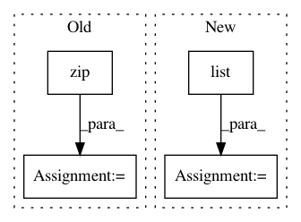

b46c893e2c0f9cd505b597c2ff215a0df04b6050,lifelines/fitters/npmle.py,,log_likelihood,#,171
Before Change
def log_likelihood(observation_intervals, p, turnbull_interval_lookup, weights):
ll = 0
for observation_interval, w in zip(observation_intervals, weights):
min_, max_ = turnbull_interval_lookup[observation_interval]
ll += w * np.log(p[min_ : max_ + 1].sum())
return ll
def reconstruct_survival_function(probabilities, turnbull_intervals, timeline=None, label="NPMLE"):
After Change
def log_likelihood(p, turnbull_interval_lookup, weights):
P = cumulative_sum(p)
ix = np.array(list(turnbull_interval_lookup.values()))
return (weights * np.log(P[ix[:, 1] + 1] - P[ix[:, 0]])).sum()
def reconstruct_survival_function(probabilities, turnbull_intervals, timeline=None, label="NPMLE"):
In pattern: SUPERPATTERN
Frequency: 5
Non-data size: 4
Instances
Project Name: CamDavidsonPilon/lifelines
Commit Name: b46c893e2c0f9cd505b597c2ff215a0df04b6050
Time: 2020-05-19
Author: cam.davidson.pilon@gmail.com
File Name: lifelines/fitters/npmle.py
Class Name:
Method Name: log_likelihood
Project Name: gboeing/osmnx
Commit Name: d7b2db3c5262c82c44958afc2500efe0838f0884
Time: 2020-12-02
Author: boeing@usc.edu
File Name: osmnx/utils_graph.py
Class Name:
Method Name: _update_edge_keys
Project Name: CamDavidsonPilon/lifelines
Commit Name: b649cc365040d9cd63631c763d1c485dfe981399
Time: 2020-05-11
Author: cam.davidson.pilon@gmail.com
File Name: experiments/working_npmle.py
Class Name:
Method Name:
Project Name: DistrictDataLabs/yellowbrick
Commit Name: b3256666df69e645159c8ef91fb3e4bfd826b8de
Time: 2018-06-05
Author: lwgray@gmail.com
File Name: yellowbrick/classifier/classification_report.py
Class Name: ClassificationReport
Method Name: score
Project Name: scikit-optimize/scikit-optimize
Commit Name: 544875dd8a7fea49a86e5623d37274159b4ba7b5
Time: 2017-01-10
Author: betatim@gmail.com
File Name: skopt/optimizer/base.py
Class Name:
Method Name: base_minimize